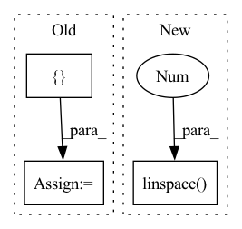

Pattern ID :7978
Before Change
def _poly(self, x):
// compute x^k
exponentials = torch.zeros([ x.shape[0], x.shape[1], self.order + 1 = torch.sum(exponentials, dim=2)
// sum all values for each dim
return torch.sum(exponentials, dim=1)After Change
// Compute all relevant x^k
// The shape of exponentials is (dim, N, order+1)
if infer_backend(x) != "tensorflow":
exponentials = x.reshape(x.shape + (1,)) ** anp.linspace(
0 , self.order, self.order + 1, like=x
)
assert exponentials.dtype == x.dtype
else:
// Tensorflow"s exponentiation gives float64 values if x are float32
// and the exponent are integerIn pattern: SUPERPATTERN
Frequency: 5
Non-data size: 3
Instances Fragment ID: 28410673
Project Name: esa/torchquad
Commit Name: a3a1438960cc83afb6844c8279415e131be2ca42
Time: 2022-03-14
Author: ga84muv@mytum.de
File Name: torchquad/tests/integration_test_functions.py
M Class Name: Polynomial
N Class Name: Polynomial
M Method Name: _poly(2)
N Method Name: _poly(2)
M Parent Class: IntegrationTestFunction
N Parent Class: IntegrationTestFunction
M File Name: torchquad/tests/integration_test_functions.py
N File Name: torchquad/tests/integration_test_functions.py
M Start Line: 78
M End Line: 89
N Start Line: 123
N End Line: 147
Before Change
def train(network):
lr_schedule = [5e-2, 1e-2, 5e-3, 1e-3, 5e-4, 1e-4, 5e-5, 1e-5]
loss_schedule = [ 0.0, 0.1, 0.2, 0.3, 0.4, 0.5, 0.6, 0.7After Change
def train(network):
loss_schedule = np.linspace( 0.9, 0.99 , num=3)
curr_stage = 0
curr_lr = 1e-3
lr_history = []
history = [] Fragment ID: 28410643
Project Name: neurotorch/neurotorch
Commit Name: 1448822fbe5f5b55b9f4434da75c983e31f11bf8
Time: 2022-08-06
Author: 50332514+JeremieGince@users.noreply.github.com
File Name: applications/time_series_forecasting_spiking/ts_pred_with_lif_autoencoder.py
M Class Name: AnonimousClass
N Class Name: AnonimousClass
M Method Name: train(1)
N Method Name: train(1)
M Parent Class:
N Parent Class:
M File Name: applications/time_series_forecasting_spiking/ts_pred_with_lif_autoencoder.py
N File Name: applications/time_series_forecasting_spiking/ts_pred_with_lif_autoencoder.py
M Start Line: 119
M End Line: 148
N Start Line: 123
N End Line: 146
Before Change
sigma = 0.1
f = gp.marginal_likelihood("f", X, y, noise=sigma)
p = gp.conditional("p", Xnew)
self.logp = model.compile_logp()({ "p": pnew} )
self.X = X
self.Xnew = Xnew
self.y = yAfter Change
self.gp.marginal_likelihood("lik", self.x[:, None], self.y, sigma)
self.map_full = pm.find_MAP(method="bfgs") // bfgs seems to work much better than lbfgsb
self.x_new = np.linspace(-6 , 6, 20)
// Include additive Gaussian noise, return diagonal of predicted covariance matrix
with model:
self.pred_mu, self.pred_var = self.gp.predict( Fragment ID: 28410627
Project Name: pymc-devs/pymc3
Commit Name: 8f02bea5e37d115d26cc6e4e27b4d3b51ef96c43
Time: 2022-08-31
Author: w.j.engels@gmail.com
File Name: pymc/tests/test_gp.py
M Class Name: TestMarginalVsMarginalApprox
N Class Name: TestMarginalVsMarginalApprox
M Method Name: setup_method(1)
N Method Name: setup_method(1)
M Parent Class:
N Parent Class:
M File Name: pymc/tests/test_gp.py
N File Name: pymc/tests/test_gp.py
M Start Line: 854
M End Line: 871
N Start Line: 853
N End Line: 879
Before Change
@staticmethod
def _partition_inds(n: int, num_parts: int):
m = n // num_parts
parts = [ m += 1
return np.cumsum(parts)
def _get_sampler_args_for_scene_split(After Change
@staticmethod
def _partition_inds(n: int, num_parts: int):
return np.round(np.linspace(0 , n, num_parts + 1, endpoint=True) ).astype(
np.int32
)
Fragment ID: 28410653
Project Name: allenai/allenact
Commit Name: 8f456ef9510093db75645c80821c92f9e21a5b72
Time: 2020-01-17
Author: jordis@allenai.org
File Name: experiments/object_nav_thor.py
M Class Name: ObjectNavThorExperimentConfig
N Class Name: ObjectNavThorExperimentConfig
M Method Name: _partition_inds(2)
N Method Name: _partition_inds(2)
M Parent Class: ExperimentConfig
N Parent Class: ExperimentConfig
M File Name: experiments/object_nav_thor.py
N File Name: experiments/object_nav_thor.py
M Start Line: 101
M End Line: 106
N Start Line: 104
N End Line: 106
Before Change
// Adjust the compatibility of ws and gws
stage_widths, stage_groups = adjust_widths_groups_comp(stage_widths, stage_bottle_ratios, stage_groups)
param_names = [ "out_chs", "stride", "dilation", "depth", "bottle_ratio", "group_width"After Change
net_stride *= stride
stage_strides.append(stride)
stage_dilations.append(dilation)
stage_dpr = np.split(np.linspace(0 , drop_path_rate, d) , np.cumsum(stage_depths[:-1]))
// Adjust the compatibility of ws and gws
stage_widths, stage_groups = adjust_widths_groups_comp(stage_widths, stage_bottle_ratios, stage_groups) Fragment ID: 28410654
Project Name: feng-lab/pytorch-image-models
Commit Name: 689030087753da1ee8cbe5cbc18ec5a5ed51a718
Time: 2020-08-11
Author: rwightman@gmail.com
File Name: timm/models/regnet.py
M Class Name: RegNet
N Class Name: RegNet
M Method Name: _get_stage_params(5)
N Method Name: _get_stage_params(4)
M Parent Class: nn.Module
N Parent Class: nn.Module
M File Name: timm/models/regnet.py
N File Name: timm/models/regnet.py
M Start Line: 302
M End Line: 302
N Start Line: 276
N End Line: 308